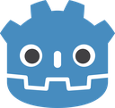

Game developer · Astana, KZ
Damir Temirgaliyev
Game developer for VR and mobile: gameplay programming, VFX and shaders, and character animation in Unreal Engine.
- Unreal Engine
- C++
- Meta Quest VR
- Blueprints
- Multiplayer replication
- Shaders & Niagara VFX
- Android
- Maya
- Cascadeur

Godot- C#
Projects
Let's work together
Reach me by email or on Telegram.